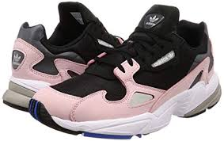

Brend History
Adidas was founded by Adolf "Adi" Dassler who made sports shoes in his mother's scullery or laundry room in Herzogenaurach, Germany after his return from World War I. In July 1924, his older brother Rudolf joined the business, which became Dassler Brothers Shoe Factory (Gebrüder Dassler Schuhfabrik). Adidas was founded by Adolf "Adi" Dassler who made sports shoes in his mother's scullery or laundry room in Herzogenaurach, Germany after his return from World War I. In July 1924, his older brother Rudolf joined the business, which became Dassler Brothers Shoe Factory (Gebrüder Dassler Schuhfabrik).
Adidas was founded by Adolf "Adi" Dassler who made sports shoes in his mother's scullery or laundry room in Herzogenaurach, Germany after his return from World War I. In July 1924, his older brother Rudolf joined the business, which became Dassler Brothers Shoe Factory (Gebrüder Dassler Schuhfabrik). Adidas was founded by Adolf "Adi" Dassler who made sports shoes in his mother's scullery or laundry room in Herzogenaurach, Germany after his return from World War I. In July 1924, his older brother Rudolf joined the business, which became Dassler Brothers Shoe Factory (Gebrüder Dassler Schuhfabrik).